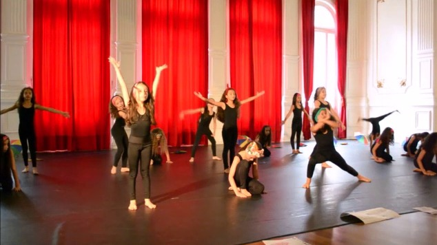

A promoção de uma ação poético-pedagógica como a de DançAdinkra, no ambiente escolar, encontra amparo evidente nas leis 10.639/03 e 13.278/16, que preconizam, respectivamente, a efetivação do ensino da história e cultura africana e afro-brasileira no ensino escolar e o ensino da dança como prática corporal essencial. Para além disso, no universo da Base Nacional Curricular Comum (BNCC), objetivos, competências e habilidades listadas como essenciais para uma formação completa também amparam e estimulam projetos como DançAdinkra.
No que se refere ao disposto para o Ensino Médio, por exemplo, quando se debate o “projeto de vida” como dimensão importante da formação, a BNCC alerta para a importância do que os estudantes anseiam, projetam e redirecionam para si ao longo de sua trajetória, numa preparação que acompanha o desenvolvimento de identidades, em transversalidade cultural e social. Neste terreno, cabe à escola o papel de estimular estudantes a se reconhecerem como sujeitos, levando em conta sua participação e intervenção social e suas potencialidades para concretização de um projeto de vida. Cabe ainda a mediação, de maneira intencional, de experiências interativas que visem a valorização da diversidade e a criação de oportunidades de crescimento.
Nesse contexto, a DançAdinkra pode proporcionar experiências que colaborem com as metas estabelecidas, tanto no ensino formal quanto em outros espaços de formação em dança. Uma vez entendido que a DançAdinkra estimula o reconhecimento e a aceitação de potencialidades e de qualidades, que ativa a criatividade, a cooperação, o compromisso e a autonomia, numa movimentação individual e coletiva para a criação de produtos culturais inclusivos, essa pesquisa pode ser compreendida como uma ferramenta geradora de reflexões, colaborando na construção de pensamento crítico, estimulando o protagonismo, o autoconhecimento e a auto avaliação e impactando positivamente na autoestima. Além do que, a dança trabalha o corpo, podendo incentivar a prática de exercício físico para um estilo de vida saudável, gerando bem-estar físico, emocional e mental.
Visualizamos, com muito afeto, o valor poético-pedagógico que esse estudo pode oferecer, também, no estímulo à competência geral para a autoria na apreciação e na participação em manifestações culturais e artísticas e no uso criativo de mídias diversas (mais à frente, neste trabalho, será comentada a mediação da DançAdinkra a partir de recursos tecnológicos e de transmissão on-line). Ressaltamos, sempre, o quanto a inserção do estudo de símbolos Adinkra na escola é, igualmente, uma maneira de resolver um problema de invisibilidade das produções e narrativas africanas e afro-brasileiras, estimulando a autonomia e a autoconfiança e combatendo preconceitos. Um projeto como DançAdinkra pode ainda ser compreendido como ferramenta para a construção de uma cultura de paz, no ambiente educacional, visando sobretudo uma resposta à violência cultural que pesa, estruturalmente, sobre o povo preto.
O reconhecimento de qualidades pessoais, a criação de símbolos identitários, a expressão pela dança e a remissão a ancestralidades tradicionalmente ocupadas podem servir para a mediação de ações de reparação direta, simbólica e estrutural, como preconizado pelos estudos da promoção da paz e do combate à violência de Johan Galtung.
Há muito a ser descoberto e investigado sobre o continente africano e sua relação com os brasileiros (as/es), mas me firmo na frase de Carmo (2016, p.26):
¨(…) Cabe-nos apresentar e difundir aquilo que nos chega ao conhecimento, pois compreender a dinâmica dos inúmeros agrupamentos humanos existentes no continente, com suas culturas e economias próprias, diferentes organizações administrativas, religiosas e familiares, é algo a ser aprendido ao longo da vida..¨
Assim, sigamos compartilhando tudo que conseguirmos, para que as próximas gerações tenham acesso a narrativas mais completas.
Na Escola de Dança de São Paulo, conduzi um processo de DançAdinkra, com a elaboração de símbolos identitários seguida de prática de criação de movimentos que resultou numa coreografia de concepção coletiva. Essas atividades foram realizadas nos meses de setembro, outubro e novembro de 2019, com três turmas de crianças (duas de meninas e uma de meninos, com idades entre 8 e 9 anos), que faziam o segundo ano da formação em dança da Escola de Dança de São Paulo e também com duas turmas de adultos, acima de dezoito anos, do curso livre de Danças Brasileiras da mesma instituição. Em todos os grupos, os procedimentos realizados foram os mesmos, porém a composição coreográfica final, que depende do ímpeto criativo próprio de cada turma, resultou em um trabalho completamente diferente.